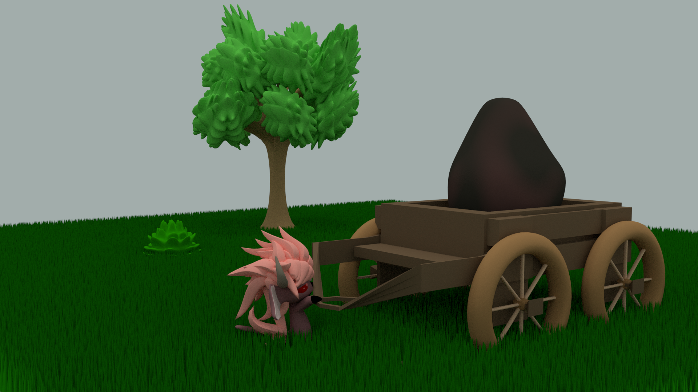
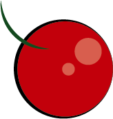
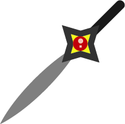
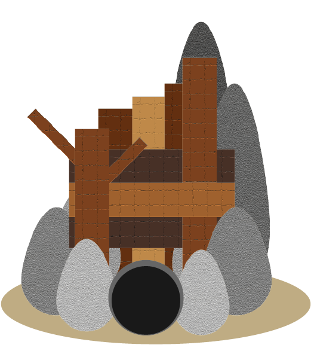

The most honest and gullible of the imps they work for little to nothing and very strong, rugged and durable
A Wrath Imp trying to pull it's cart out of the earth.
The Wrathful imps like to venture out and fight strong opponents. They can also be fighters for hire and can reside in a village to help protect other imps. They turned their rage and inability to show mercy into a form of justice that they dispense upon the monsters and unjust imps. They are pretty much neutral to everyone, until other imps try to antagonize them; they kick, bite, head-butt, and scratch even until after the other imp tries to flee. They tend to have short tempers but they will warn you first if you are making them irritable. Wrath imps are good at destroying old buildings, being bodyguards and truing rocks into pebbles for decorations. Every punch and kick is premeditated and thrown with skill and precision, however, they have a higher chance of dying due to their inability to back down from conflicts and need medicine from the Prideful imps. Lustful imps can calm down their obsession with violence.
These fruits are spicy and keep Wrath Imps energized.
Wrath Imps wore armor made by the Greed Imps in times of war against the humans.
These swords that the energy of their user and deals more damage the more it is used. Wrath Imps losing themselves in the heat of battle have died and taken many lives with this weapon.
Wrath Imps make their homes out of rocks, trees and other materials readily found in the forest.